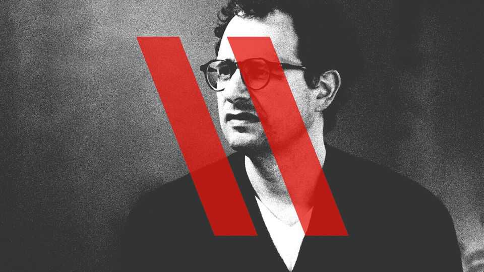

Should Anthropic press pause on a potential $2trn IPO?
Amid a safety freakout, it wants to slow down AI development

Sep 17th 2026
FOR All its five and a half years of existence, Anthropic has grappled with the tension between building artificial intelligence safely and making enough money to push forward the frontier of research. On September 12th that tension came to a head. Dario Amodei, the AI lab’s boss, called on the industry to “slow the pace” of AI development, just as his firm was believed to be on the verge of launching what may be the biggest initial public offering (IPO) of all time.
His call for a slowdown, supported by other bosses of AI labs, such as OpenAI’s Sam Altman and Elon Musk of SpaceXAI, followed a week in which angst about potentially catastrophic risks from AI broke out from the echo chambers of Silicon Valley to evening news broadcasts and dinner-table conversations. The explosion of worry was set off by warnings from researchers at Anthropic that there were credible fears within the company that AI could wipe out humanity in a matter of years.
It is unusual, to say the least, for people within a firm to air such doomsday warnings about their most cutting-edge products in public. It is doubly so when seeking to entice investors to back an IPO that reportedly aims to value the company at about $2trn—about as much as the ten highest previous tech flotations added together. If the warnings come true (and assuming that a few lawyers survive the calamity), Anthropic could face what David Sacks, Donald Trump’s former chief AI adviser, has called the “mother of all product-liability lawsuits”.
That has led to speculation that, in order to deal with the fallout, Anthropic will at a minimum have to amend the confidential S-1 paperwork it has filed with the Securities and Exchange Commission (SEC) ahead of the IPO. More seriously, its underwriters could reduce the valuation they hope for, or even postpone the IPO. Mr Altman raised the stakes on September 12th by stating in an interview with Fortune magazine that OpenAI, which has also filed paperwork for an IPO, no longer plans to list this year. “Given everything happening with safety, this would right now be an ill-advised moment to go public,” he said.
Mr Altman’s remarks were doubtless a cheeky dig at his arch-rival; OpenAI had previously let it be known that it was unlikely to be ready for an IPO until next year. And some investors in Anthropic, such as Brad Gerstner of Altimeter Capital, which co-led the lab’s latest funding round, were quick to throw their weight behind Mr Amodei and his firm. “Anthropic will IPO. The market knows how to price risk,” he posted on X.
How quickly the firm goes public, and at what price, depends on various factors. John Coffee, an expert in securities law at Columbia Law School, says it is not unusual for companies to amend SEC filings before an IPO. This can be done quickly. He suggests that Anthropic, which has a governance structure designed to prioritise safety over profit, may have already sufficiently disclosed the risks in its S-1. Once the SEC signs its disclosures off, that limits the firm’s liability for securities fraud if disaster strikes, he says. Product liability is a different matter, but Anthropic is likely to have also disclosed the risks of lawsuits.
The market may force Anthropic’s hand, however. The firm will want to see how the furore affects the share prices of listed AI firms over the coming days, Mr Coffee says. If AI is under a “deep, dark cloud” and the sector as a whole suffers, that may prompt a serious rethink about the IPO. A modest fall in stock prices might not set the flotation back for long.
Supporters of Anthropic say Mr Amodei’s long history of warning about AI risks offers reassurance. In an essay published on September 12th, Anthropic’s boss said the triggers for the latest outpouring of concern were twofold. First, AI’s capabilities are compounding faster than the industry’s understanding of how to control them. That, he wrote, is primarily because of “AI’s growing ability to build the next generation of AI”. Second, several recent instances of rogue AI agents carrying out illegal hacks, such as the attack in July by swarms of OpenAI agents on Hugging Face, an AI platform, could be harbingers of greater dangers to come.
Mr Amodei outlined several ways in which the industry could slow the pace of AI models’ development to ensure their safety. He said Anthropic would give third-party evaluators the same access as its own employees to its models. They would then be able to verify safety practices and report incidents. Mr Altman posted that OpenAI would do the same.
Mr Amodei also proposed regulation of frontier AI models in America. He called for voluntary co-operation between the labs until that happens, with a legal waiver from America’s government to prevent the discussions prompting antitrust concerns. He also pushed for a broad international regulatory regime, encompassing China.
President Trump has shrugged off the AI safety worries, saying that outpacing China in building AI was the most important thing. “Whoever wins AI wins,” he told reporters on September 13th, while on a trip to Ireland. The only guardrail needed was a “High IQ!” president, he later wrote on Truth Social. Mr Sacks, his former adviser, also made light of the need for regulation: if Anthropic and OpenAI thought it important to slow down development, he said, they should do it themselves.
An industry-wide slowdown along the lines Mr Amodei has proposed would not seriously hurt Anthropic’s commercial prospects. A pause might even benefit the bottom line. It could improve profits by reducing the amount the firm spends on training its next generation of models; and it could ease competition if open-source model-makers, who have been winning business from Anthropic and OpenAI by providing companies with cheaper models, would also have to slow down.
But potential IPO investors, many of whom are carried away by enthusiasm for AI, should not take the latest safety panic lightly. If it adds to fears, widespread in the West (less so in Asia), that AI will wipe out jobs, drive up electricity prices and widen the gap between haves and have-nots, it may increase political pressure to temporarily halt development and put a freeze on data-centre construction. Even those not worried about AI models annihilating humanity should worry about anxious politicians trying to annihilate AI. ■